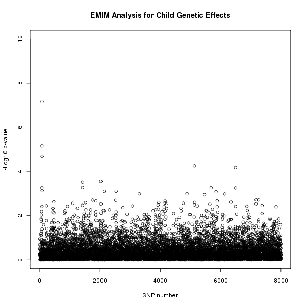
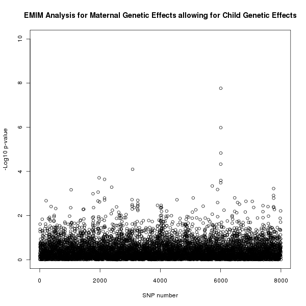
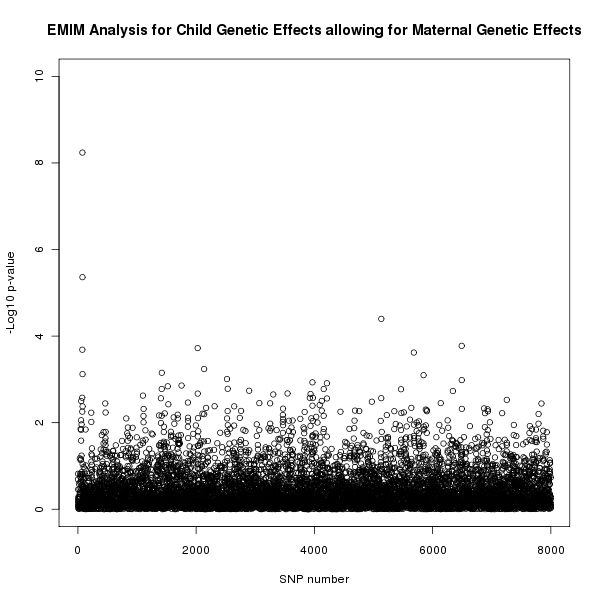

7 Example using PREMIM and EMIM
This section contains a worked example of how EMIM and PREMIM can be used to analyse pedigree data given in a standard pedigree PLINK file. The data for this example, exampleEMIM.zip,uses simulated data. The commands below refer to the LINUX/UNIX installation and will need to changed accordingly for other systems.
In this example we perform several different analysis: child genetic effects, maternal genetic effects, maternal genetic effects allowing for child genetic effects and finally child genetic effects allowing for maternal genetic effects.
To use EMIM with the pedigree data it is necessary to produce the input files needed by EMIM, see section section 5. We do this by running PREMIM on the pedigree data. We use a binary input pedigree file (exampleEMIM.bed) as it is quicker to execute and saves file space. A copy of the screen output from PREMIM will be saved in the file premim.log.
./premim -cg -a -rout snplist.txt exampleEMIM.bed
The program PREMIM will produce all the files needed for analysis with EMIM: a markers file: emimmarkers.dat; a parameter file: emimparams.dat; a case parent trios file: caseparenttrios.dat; a case mother duos file: casemotherduos.dat; a control mother duos file: conmotherduos.dat and a controls file: cons.dat. (In this example, there are no other types of pedigree unit available, and so although additional input files are created e.g. caseparents.dat, casefatherduos.dat, casemothers.dat, casefathers.dat, cases.dat, conparents.dat, confatherduos.dat, these files have all counts=0 and so will not be used by EMIM according to the specification in the parameter file emimparams.dat. These files may be used, however, if you have different input data, consisting of other types of pedigree unit).
The -cg option is used to set options in the created EMIM parameter file to test for child genetic effects. The -a option is used to produce the file emimmarkers.dat containing estimates of the allele frequencies based on the given data. The -rout snplist.txt option is used to output a listing of the risk alleles to the file snplist.txt. This will be useful for matching up the SNP ID used by EMIM with the original SNP names as specified in the PLINK map file exampleEMIM.bim
It is also possible to set other options, see section 4.1, and more advanced options must be set by manually editing the parameter file.
The output from PREMIM will be written to the screen and saved to a file premim.log. It should look something like the following:
PREMIM: Pedigree file processing program for EMIM, v2.05
--------------------------------------------------------
Child genotype analysis set for parameter file (emimparams.dat).
Estimating allele frequencies and writing to file (emimmarkers.dat).
Number of subjects: 2400
Males: 1800 (75%)
Females: 600 (25%)
Unknown sex: 0 (0%)
Affected: 400 (16.6667%)
Unaffected: 2000 (83.3333%)
Number of SNPs: 8000
Number of pedigrees: 1600
Mean pedigree size: 1.5
Standard deviation of pedigree size: 0.500313
File name: emimmarkers.dat
Number of allele SNP frequencies estimated: 8000
File name: caseparenttrios
Number of counted case parent trios (all SNPs): 1600000
Average number of counted case parent trios (per SNP): 200
Number of uncounted (Mendelian error) case parent trios: 0
File name: casemotherduos
Number of counted case mother duos (all SNPs): 1600000
Average number of counted case mother duos (per SNP): 200
Number of uncounted (Mendelian error) case mother duos: 0
File name: casefatherduos
Number of counted case father duos (all SNPs): 0
Average number of counted case father duos (per SNP): 0
Number of uncounted (Mendelian error) case father duos: 0
File name: cases
Number of counted cases (all SNPs): 0
Average number of counted cases (per SNP): 0
File name: caseparents
Number of counted case parents (all SNPs): 0
Average number of counted case parents (per SNP): 0
Number of uncounted (Mendelian error) case parents: 0
File name: casemothers
Number of counted case mothers (all SNPs): 0
Average number of counted case mothers (per SNP): 0
File name: casefathers
Number of counted case fathers (all SNPs): 0
Average number of counted case fathers (per SNP): 0
File name: conparents
Number of counted control parents (all SNPs): 0
Average number of counted control parents (per SNP): 0
Number of uncounted (Mendelian error) control parents: 0
File name: conmotherduos
Number of counted control mother duos (all SNPs): 1600000
Average number of counted control mother duos (per SNP): 200
Number of uncounted (Mendelian error) control mother duos: 0
File name: confatherduos
Number of counted control father duos (all SNPs): 0
Average number of counted control father duos (per SNP): 0
Number of uncounted (Mendelian error) control father duos: 0
File name: cons
Number of counted controls (all SNPs): 8000000
Average number of counted controls (per SNP): 1000
Number of uncounted groups: 0
The parameter file, emimparams.dat, created by PREMIM looks as follows.
-----------INPUT DATAFILES----------------------------------------------------
1 << caseparenttrios.dat file (0=no, 1=yes)
0 << caseparents.dat file (0=no, 1=yes)
1 << casemotherduos.dat file (0=no, 1=yes)
0 << casefatherduos.dat file (0=no, 1=yes)
0 << casemothers.dat file (0=no, 1=yes)
0 << casefathers.dat file (0=no, 1=yes)
0 << cases.dat file (0=no, 1=yes)
0 << conparents.dat file (0=no, 1=yes)
1 << conmotherduos.dat file (0=no, 1=yes)
0 << confatherduos.dat file (0=no, 1=yes)
1 << cons.dat file (0=no, 1=yes)
8000 << no of SNPs in each file
------------------PARAMETER RESTRICTIONS--------------------------------------
0 << fix allele freq A (0=no, 1=yes)
1 << assume HWE and random mating (0=no=estimate 6 mu parameters, 1=yes)
0 << assume parental allelic exchangeability (0=no, 1=yes)
0 << use CPG likelihood (estimate 9 mu parameters)
1 << estimate R1 (0=no, 1=yes)
1 << estimate R2 (0=no, 1=yes)
0 << R2=R1 (0=no, 1=yes)
0 << R2=R1squared (0=no, 1=yes)
0 << estimate S1 (0=no, 1=yes)
0 << estimate S2 (0=no, 1=yes)
0 << S2=S1 (0=no, 1=yes)
0 << S2=S1squared (0=no, 1=yes)
0 << estimate Im (0=no, 1=yes)
0 << estimate Ip (0=no, 1=yes)
0 << estimate gamma11 (0=no, 1=yes)
0 << estimate gamma12 (0=no, 1=yes)
0 << estimate gamma21 (0=no, 1=yes)
0 << estimate gamma22 (0=no, 1=yes)
0 << gamma22=gamma12= gamma21=gamma11 (0=no, 1=yes)
------------------OTHER PARAMETERIZATIONS-------------------------------------
0 << estimate Weinberg (1999b) Im (0=no, 1=yes)
0 << estimate Weinberg (1999b) Ip (=Li 2009 Jm) (0=no, 1=yes)
0 << estimate Sinsheimer (2003) gamma01 (0=no, 1=yes)
0 << estimate Sinsheimer (2003) gamma21 (0=no, 1=yes)
0 << estimate Palmer (2006) match parameter (0=no, 1=yes)
0 << estimate Li (2009) conflict parameter Jc (0=no, 1=yes)
We do not want to rerun PREMIM every time we want to use EMIM so it is a good idea to save the parameter file for future use.
cp emimparams.dat emimparamsCG.dat
Now that all the necessary files have been created for EMIM (as described in section 7.1) the next step is to run EMIM.
./emim
The results are output to files emimresults.out and emimsummary.out. We will save these files for future use.
cp emimsummary.out emimsummaryCG.out
cp emimresults.out emimresultsCG.out
Although the file emimresultsCG.out is too big to look at in detail, we recommend you take a look at the top of it (i.e. examine the results for the first two or three SNPs) to get a feel for how the EMIM analysis has proceeded:
more emimresultsCG.out
For large numbers of SNPs, a more useful summary is provided in the file emimsummaryCG.out. We can view the results of the analysis and calculate p-values for the resulting chi-squared tests by using the program R. Start up R and then (within R) use the following commands:
# Read in the child analysis results:
resultsCG<-read.table("emimsummaryCG.out", header=T)
# Get the log likelihood ratio tests for each SNP
logLikeRatioCG<-resultsCG$twicediff
# Calculate the p-values for each SNP (2 degrees of freedom)
pvaluesCG<-1-pchisq(logLikeRatioCG, 2)
# Plot the -log10 p-values for each SNP
plot(resultsCG$snp, -log10(pvaluesCG), xlab="SNP number",
ylab="-Log10 p-value",
main="EMIM Analysis for Child Genetic Effects", ylim=c(0, 10) )
Similar calculations and plots could be generated using alternative software packages such as Excel. However, we find R more convenient when there are large numbers of SNPs (e.g. many thousands of rows in the file emimsummary.out).
The results of this analysis can be seen in figure 1. The plot appears to shows a child genetic effect early in the SNP sequence.

Figure 1. Plot of the -log10 p-values for each SNP given by EMIM to detect child genetic effects.
If you wish to merge in the original SNP names as specified in the PLINK map file exampleEMIM.bim, and output a new summary file that includes a column with this information, as well as the p-values, you could do this in R using the following commands:
snplist<-read.table("snplist.txt", header=F)
names(snplist)<-c("snpno","snpname","riskallele")
newsummary<-data.frame(snplist, pvaluesCG, resultsCG)
write.table(newsummary, file="emimnewsummaryCG.out", row.names=F, quote=F)
Because of the way that PREMIM uses the SNP number as the SNP ID to be supplied to EMIM, you should find that the columns headed "snpno", "snp", "snpID" all correspond to the SNP number (order) in the original PLINK file exampleEMIM.bim, while the column headed "snpname" corresponds to its original name (e.g. an rsID) in the file exampleEMIM.bim.
Of course, we wish to use EMIM to test for effects other than child genetic effects. Now that PREMIM has already created the files that we need, to perform another analysis we can take the following steps to test for maternal genetic effects.
-
Edit the EMIM parameter file. To perform a maternal genetic effect analysis we firstly need to edit the emimparams.dat file, changing the following lines.
...
0 << estimate R1 (0=no, 1=yes)
0 << estimate R2 (0=no, 1=yes)
...
1 << estimate S1 (0=no, 1=yes)
1 << estimate S2 (0=no, 1=yes)
...
Again, it may be useful to save a copy of the parameter file for future use.
cp emimparams.dat emimparamsMG.dat
-
Run EMIM. Now that all the files are ready to perform a maternal genetic effects analysis we can run EMIM.
./emim
-
Analysis results. As before, the results are output to files emimresults.out and emimsummary.out. We save these files for future use.
cp emimsummary.out emimsummaryMG.out
cp emimresults.out emimresultsMG.out
We can view the results of the analysis in R using the following commands.
# Read in the maternal analysis results:
resultsMG<-read.table("emimsummaryMG.out", header=T)
# Get the log likelihood ratio tests for each SNP
logLikeRatioMG<-resultsMG$twicediff
# Calculate the p-values for each SNP (2 degrees of freedom)
pvaluesMG<-1-pchisq(logLikeRatioMG, 2)
# Plot the -log10 p-values for each SNP
plot(resultsMG$snp, -log10(pvaluesMG), xlab="SNP number",
ylab="-Log10 p-value",
main="EMIM Analysis for Maternal Genetic Effects", ylim=c(0, 10) )
The results of this analysis can be seen in figure 2. The plot appears to shows a maternal genetic effect later in the SNP sequence.
Figure 2. Plot of the -log10 p-values for each SNP given by EMIM to detect maternal genetic effects.
We may wish to confirm that a maternal genetic effect is a genuine maternal genetic effect and not the result of an underlying child genetic effect. To test this we can take our null hypothesis to be the child genetic effect analysis and the alternative hypothesis to be the joint child and maternal genetic effect analysis. Firstly, we need to perform another EMIM analysis testing for both child and maternal genetic effects.
-
Edit the EMIM parameter file. To test for child and maternal genetic effects we firstly need to edit the emimparams.dat file, changing the following lines.
...
1 << estimate R1 (0=no, 1=yes)
1 << estimate R2 (0=no, 1=yes)
...
1 << estimate S1 (0=no, 1=yes)
1 << estimate S2 (0=no, 1=yes)
...
Again, it may be useful to save a copy of the parameter file for future use.
cp emimparams.dat emimparamsCGMG.dat
-
Run EMIM. Now that all the files are ready to perform a child and maternal genetic effects analysis we can run EMIM.
./emim
-
Analysis results. Again, the results are output to files emimresults.out and emimsummary.out. We save these files for future use.
cp emimsummary.out emimsummaryCGMG.out
cp emimresults.out emimresultsCGMG.out
We can view the results of the analysis for maternal effects whilst allowing for child effects by comparing the two EMIM analyses by using the following R commands:
# Read in the results:
resultsCG<-read.table("emimsummaryCG.out", header=T)
resultsCGMG<-read.table("emimsummaryCGMG.out", header=T)
# Calculate the log likelihood ratio tests for each SNP
logLikeRatioCGMGvsCG<-2*(resultsCGMG$lnlikfull-resultsCG$lnlikfull)
# Calculate the p-values for each SNP (2 degrees of freedom)
pvaluesCGMGvsCG<-1-pchisq(logLikeRatioCGMGvsCG, 2)
# Plot the -log10 p-values for each SNP
plot(resultsCG$snp, -log10(pvaluesCGMGvsCG), xlab="SNP number",
ylab="-Log10 p-value",
main="EMIM Analysis for Maternal Genetic Effects allowing for Child Genetic Effects",
ylim=c(0, 10) )
The results of this analysis can be seen in figure 3. The plot appears to shows a maternal genetic effect later in the SNP sequence, further supporting the result shown in figure 2 that this effect is a genuine maternal genetic effect and not a child genetic effect.

Figure 3. Plot of the -log10 p-values for each SNP given by EMIM to detect maternal genetic effects whilst allowing for child effects.
Similarly, we can test for child genetic effects whilst allowing for maternal genetic effects. We already have the results that we need from EMIM for this analysis, one for maternal genetic effects, which in this case we take as our null hypothesis, and another for child and maternal effects together, which is our alternative hypothesis. To view the results of this analysis we can use the following R commands.
# Read in the results:
resultsMG<-read.table("emimsummaryMG.out", header=T)
resultsCGMG<-read.table("emimsummaryCGMG.out", header=T)
# Calculate the log likelihood ratio tests for each SNP
logLikeRatioCGMGvsMG<-2*(resultsCGMG$lnlikfull-resultsMG$lnlikfull)
# Calculate the P-values for each SNP (2 degrees of freedom)
pvaluesCGMGvsMG<-1-pchisq(logLikeRatioCGMGvsMG, 2)
# Plot the -log10 p-values for each SNP
plot(resultsMG$snp, -log10(pvaluesCGMGvsMG), xlab="SNP number",
ylab="-Log10 p-value",
main="EMIM Analysis for Child Genetic Effects allowing for Maternal Genetic Effects",
ylim=c(0, 10) )
The results of this analysis can be seen in figure 4. The plot appears to shows a child genetic effect early in the SNP sequence, this time supporting the result in figure 1 that this effect is a genuine child genetic effect and not a maternal genetic effect.

Figure 4. Plot of the -log10 p-values for each SNP given by EMIM to detect child genetic effects whilst allowing for maternal effects.
In fact, these data were simulated to have a child genotype effect at SNP number 76 with  and
and  and a maternal genotype effect at SNP number 6004 with
and a maternal genotype effect at SNP number 6004 with  and
and  .
.

{kind=link}
{kind=link}
{kind=link}
{kind=link}